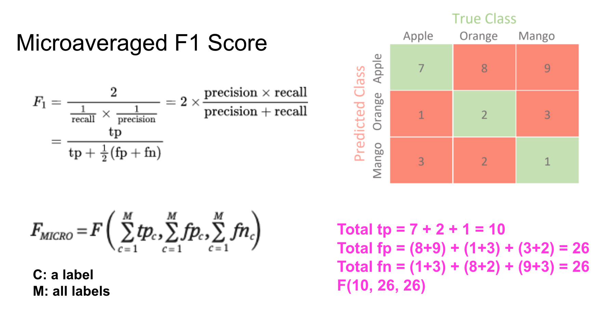

In my presentation on a data mining class today, a peer mentioned a thoughtful question about the micro-F1 score (see figure 1) - the sum of FP and the sum of FN looks equal, are they always equal? If yes, why calculate twice?

The question is interesting and here’s my thought after some research and thinking. I think it can be generalized to “for any confusion matrix, the sum of FP is equal of the sum of FN”. In other words,
sum(FP1,...,FPn) = sum(FN1,...,FNn) = sum(all) - sum(diagonals)
It’s easy to prove it mathematically, but how to understand the equality? An intuitive way thinking about it is that, since they are all False, a FP of something is the FN of another thing. For example, for an orange that’s falsely predicted as an apple, it contributes both to the FP of class Apple and to the FN of class Orange. So for every False prediction, it will contribute to the sum of FP and the sum of FN at the same time. Therefore, the sum should always be the same.
As a result, you might also find the following equation is true. That’s why micro-F1 is usually mentioned alone comparing to macro-F1 which usually mentioned together with macro-precision and macro-recall.
micro-F1 = accuracy = micro-precision = micro-recall
But why both terms appear in the following expression of micro-F1? I’m not sure the actual reason behind. From my perspective, I think although values are the same, their meaning are different. I don’t think we have to calculate it twice but they appear in the expression probably since they have their own meaning and, moreover, can be corresponding to the single F1 score which can be expressed by TP, FP and FN as well. This is my guess. I think at the implementation-level we probably could just calculate it once and reuse that number.
Here are some readings that may be helpful:
Multi-Class Metrics Made Simple, Part II: the F1-score
Micro, Macro & Weighted Averages of F1 Score, Clearly Explained